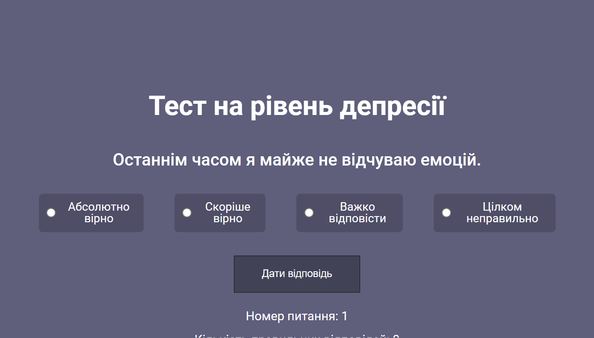
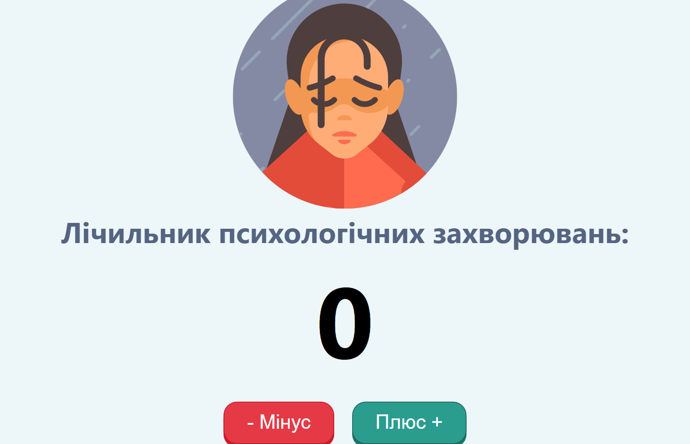

Psycho

Тест на рівень депресії
Тест на депресію може визначити. У такі
моменти людина вкрай схильна до зовнішніх
впливів як психічним, так і фізичним.

Тест на рівень депресії
Тест на депресію може визначити. У такі
моменти людина вкрай схильна до зовнішніх
впливів як психічним, так і фізичним.